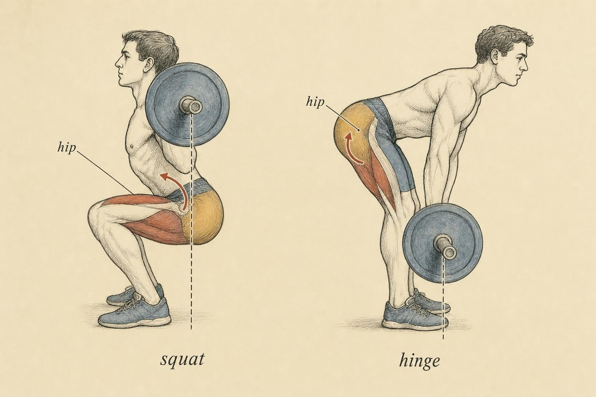
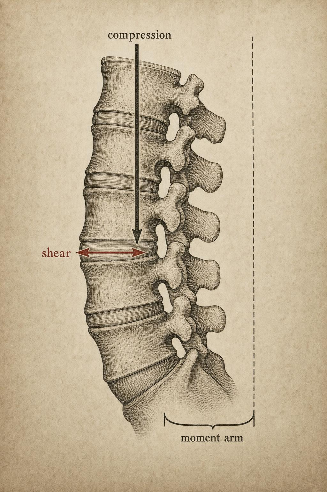

The Hinge and the Deadlift: Load, Leverage, and the Spine
Why the deadlift is a battle against a very long external moment arm — and why the spine gets special attention.
Picture a lifter standing over a loaded barbell. Nothing has moved yet. The plates are on the floor, the hands are wrapped around the knurling, and the whole system is perfectly still. And yet, before a single millimetre of vertical travel, the hardest mechanical decision of the entire lift has already been made: how far in front of the hips does the bar sit, and how far has the torso tipped to reach it? Those two facts — settled in the setup, invisible to a casual observer — will determine more about the demand on the hips and the spine than the weight on the bar itself.
In the last chapter, the squat was a conversation between two joints, knee and hip, trading torque as the load descended. The hinge is different. It is the hip's solo performance, and the deadlift is that solo performed under maximal load. To read it correctly you need only one instrument — the moment-arm engine you have been building since Chapter 2 — but you must point it at a structure we have so far treated as a single beam: the trunk. In this chapter the spine stops being a lever and becomes what it actually is, a stack of segments held in relationship, and the horizontal distance from that stack to the barbell becomes the single most important number in the room.
The hinge: rotation dominated by the hip
Strip a movement pattern down to its rotation and you can classify it honestly. A hip hinge is a pattern in which the bulk of the sagittal-plane motion happens at the hip joint, with comparatively little at the knee and — ideally — very little at the spine. The femur stays relatively vertical or travels only modestly forward; the pelvis rotates over the femoral heads like a see-saw over its fulcrum; the torso inclines toward the floor. Contrast this with the squat, where the knee flexes deeply, the shank inclines forward over the foot, and the torso stays comparatively upright. Same primary engine — hip extension — but a completely different distribution of joint work.
This distinction matters because it tells you where the torque will accumulate. In a hinge, because the knee contributes little and the torso travels through a large angular range, the horizontal displacement of the load away from the hip becomes enormous. The hip extensors — the glutes and the hamstrings acting across the hip — must generate the extension torque to reverse that displacement, while the muscles that resist trunk flexion must hold the stack of spinal segments together against a load trying to fold it forward. The Romanian deadlift, the good-morning, the kettlebell swing, and the conventional deadlift are all members of this family. They differ in load and in range, but they share a signature: a long external moment arm at the hip.

The same engine, two distributions: the squat shares work with the knee; the hinge is the hip's solo." data-image-idx="0" style="display:block;max-width:100%;max-height:75vh;height:auto;width:auto;margin:0 auto;cursor:pointer;">The external moment arm at the hip
Recall the definition you have used all course: the external moment about a joint equals the external force multiplied by its moment arm — the perpendicular distance from the joint's axis to the line of action of the force. For a barbell, the force is gravity acting straight down through the bar's centre of mass. The line of action is therefore a vertical plumb line dropped from the bar. The moment arm at any joint is simply the horizontal distance from that joint to the plumb line.
Now watch what happens as the torso inclines. In the top position of a deadlift the hip sits almost directly under the bar; the horizontal distance is small, and so is the hip-extension torque demand. As the lifter hinges to reach the floor, the torso tips forward and the hips travel backward relative to the bar. The horizontal gap between hip and plumb line grows. Because torque is force times that gap, and the force is constant, the extension demand at the hip climbs in near-linear proportion to the horizontal distance. This is why the hinge feels hardest not at the very bottom of a symmetric range, but at the position of greatest torso inclination combined with the load still on the ground.
The relationship is unforgiving because it is trigonometric. The horizontal offset of the trunk's mass — and of the bar held in front of it — scales roughly with the sine of the torso's inclination from vertical. Tilt from 30° to 60° and you more than double the effective moment arm even though the torso has swept through the same 30° it did on the way from vertical to 30°. Small changes in torso angle near the horizontal produce outsized changes in torque. That single fact is the reason a lifter who lets the chest drop even slightly at the start of a heavy pull can feel the weight suddenly become immovable.
Swinton and colleagues (2011) put numbers on the load side of this equation. Nineteen powerlifters pulling conventional deadlifts from 10% to 80% of one-repetition maximum saw peak lumbar net moment climb from roughly 245 Nm to roughly 447 Nm — a direct, monotonic load-to-moment relationship. That study varied the weight; our widget below varies the geometry. Both levers feed the same product.
The spine is not a lever — it is a stack
Until now we have quietly treated the trunk as a single rigid beam rotating about the hip. For the hip torque calculation that simplification is fine. For understanding what happens inside the trunk, it is dangerously wrong. The spine is a column of vertebrae separated by intervertebral discs and lashed together by ligaments, fascia, and muscle. It is a stack of segments, each of which can flex, extend, and shear relative to its neighbours. When we speak of the "spinal moment arm," we mean the horizontal distance from a particular motion segment — most often L4/L5 or L5/S1, where loads peak — to the plumb line of the load.
Stuart McGill's body of work, synthesised in Low Back Disorders (2015), is the reference frame here. McGill treats the lumbar spine as a segmented column whose resistance to flexion comes from active muscular co-contraction and from passive connective tissue, and whose loading must be described in at least two independent currencies: compression along the column's axis, and shear perpendicular to it. These are not interchangeable. A posture that reduces one can increase the other, which is why the folk prescription to "always lift with a straight back" is more slogan than mechanics.
Von Arx and colleagues (2021) demonstrated exactly this trade-off. Using motion-capture-driven musculoskeletal modelling of thirty adults lifting a 15 kg box, they found that stoop lifting (a hinge with a flexed spine) produced smaller total and compressive loads but higher anterior-posterior shear across the upper lumbar spine, while squat lifting reduced shear but increased compression, particularly at L5/S1. There is no universally "safe" posture — there is a posture-dependent redistribution of load type. What you can control is whether the segments are held in a stable relationship while that load passes through them.

Two currencies of spinal load: compression down the column, shear across the segments." data-image-idx="1" style="display:block;max-width:100%;max-height:75vh;height:auto;width:auto;margin:0 auto;cursor:pointer;">Shoji and colleagues (2025) sharpened the picture for the deadlift specifically. Tracking a six-region spinal model on thirteen lifters pulling from 60% to 90% of 1RM, they documented a load-dependent increase in lower-thoracic and upper-lumbar flexion accompanied by posterior pelvic tilt as the weight rose. In plain terms: as the load climbs, the stack tends to buckle toward flexion and the pelvis tucks under. Their conclusion is squarely mechanical — maintaining lumbar lordosis, anterior pelvic tilt, and trunk rigidity becomes progressively more important as load increases, because a flexing stack changes both the internal geometry of the segments and the shear they must resist.
Trunk stability and effective load
Here is where a coach's language must stay precise. Bracing does not reduce the external moment arm — the barbell is where it is regardless of how hard the lifter breathes. What a stable, braced trunk does is change how the load is transmitted through the stack. When the abdominal wall and the trunk musculature co-contract and intra-abdominal pressure rises, the segmented column behaves more like a single rigid unit. McGill's work documents how this co-contraction and intra-abdominal pressure stiffen the spine, distribute load more evenly across motion segments, and reduce the tendency of any single segment to shear or buckle under compression.
The practical consequence is that two lifters with identical external moment arms can subject their spinal structures to very different effective demands depending on whether the stack holds position. A rigid, well-braced trunk keeps the segments in the geometric relationship the muscles are strongest in and the passive tissues tolerate best. A trunk that loses position under load — the chest caving, the lumbar spine rounding as in Shoji's high-load condition — changes that geometry mid-lift, shifting load toward tissues and orientations that resist it less well. This is the mechanical case for "bracing," stated without exaggeration: it does not lighten the bar, but it governs how the bar's demand lands inside the body.
A note on scope, because it is a boundary this course takes seriously. We are describing mechanics, not prescribing rehabilitation. Back pain, a loss of position that a lifter cannot control, or symptoms that appear during hinging are signals that warrant evaluation by a qualified professional. Nothing in this chapter is a diagnosis or a treatment. The value of the mechanics is that it lets you read the demand and understand why position matters — not that it licenses you to manage a symptomatic spine.
Bar-to-body distance: the biggest lever you control
Of every variable in a deadlift, the one most directly under a lifter's control — and the one with the largest leverage over spinal and hip demand — is the horizontal distance between the barbell and the body. Because the moment arm at every joint is the horizontal gap to the bar's plumb line, letting the bar drift even a few centimetres forward of the shins lengthens that gap at the hip and at every lumbar segment simultaneously. A bar that rides against the shins and stays over the midfoot keeps every moment arm as short as the lifter's anatomy allows.
This is why the cue to "keep the bar close" is not aesthetic pedantry — it is the single most efficient intervention available. You cannot change the length of a lifter's femur or the height of their torso. You can change whether the bar tracks along the body or swings away from it. Swinton and colleagues (2011) illustrated the same principle from the equipment side: the hexagonal barbell, which places the load's centre of mass in line with the lifter rather than in front of the shins, significantly reduced peak moments at the lumbar spine, hip, and ankle relative to a straight bar — while increasing the knee moment, because the more upright, squat-like posture the hex bar permits shifts work toward the knee. Lifters also achieved a higher 1RM with the hex bar (265 vs. 245 kg). Same load, different geometry, different distribution — exactly the logic of Chapter 2 applied to hardware.
Conventional, sumo, and the Romanian hinge: three answers to one problem
If the deadlift is fundamentally a fight against a long moment arm at the hip and spine, then the major deadlift variations are best understood as different solutions to that same problem — each trading one demand for another, and each suiting different bodies. This connects directly to the individual-variation themes of Chapter 5: there is no single correct stance, only stances that suit particular proportions.
Sumo: shortening the spinal moment arm
The sumo deadlift widens the stance dramatically and turns the feet out, letting the lifter drop the hips closer to the bar and keep the torso substantially more upright. Escamilla and colleagues (2000), in a landmark 3D analysis of 24 lifters at a national championship, found sumo lifters maintained a 5–10° more vertical trunk, used a far wider stance (70 vs. 32 cm), and — because a more upright torso travels a shorter vertical bar path — performed roughly 25–40% less mechanical work than conventional lifters moving the same load. The more upright torso is the mechanical heart of sumo: it shortens the horizontal distance from the lumbar spine to the bar.
Cholewicki and colleagues (1991) had already quantified the payoff at the spine. Measuring L4/L5 loads in powerlifters at a national championship — with average compressive loads reaching a staggering 17,192 N — they found the sumo style produced roughly a 10% reduction in L4/L5 net joint moment and about an 8% reduction in shear compared to conventional pulling, directly attributable to the shorter horizontal bar-to-spine moment arm afforded by the more upright torso. Shoji and colleagues (2025) echoed the same mechanism: sumo reduces hip torque demand by shortening the moment arm through a more upright posture.
Conventional: sagittal dominance, longer arm
The conventional pull accepts a longer moment arm in exchange for a narrower, more sagittally-oriented movement. Hanen and colleagues (2025), studying thirty experienced lifters at 85% 1RM with motion capture, force plates, and EMG, found conventional deadlifts generated higher hip-extension moments and greater biceps femoris and erector spinae activation, while sumo produced greater frontal- and transverse-plane hip and knee moments — reflecting the mediolateral stabilisation demanded by the wide stance. Their summary is worth memorising: conventional is sagittally dominant and posterior-chain driven; sumo trades some of that sagittal demand for multi-planar stabilisation. Neither is "easier" in the abstract; they load different structures. Gundersen and colleagues (2024), using statistical parametric mapping across conventional, sumo, and hex-bar pulls in strength-trained women, added a further reminder that barbell geometry itself — where the load's centre of mass sits — alters the external moment arm at both hip and lumbar spine, so equipment and stance are two dials on the same machine.
The Romanian hinge: same family, different range
The Romanian deadlift is the hinge in its purest form: the knees stay relatively fixed, the range stops well above the floor, and the entire movement is a controlled lengthening and shortening of the hip extensors under a persistent, long moment arm. It is not a lighter conventional deadlift; it is a deliberate choice to keep the hip's moment arm long throughout a partial range, which is precisely why it is used to load the posterior chain. Reading it through the moment-arm engine, the RDL is the hinge without the assist of the knee and floor — the hip's solo with no accompaniment.
The spine tolerates load remarkably well when its segments are held in a stable relationship; it tolerates the same load far less well when that relationship is lost. Position, not merely magnitude, governs the demand.
Paraphrasing the framework of McGill (2015)
Reading the hinge as a torque problem
Put the pieces together and a deadlift resolves into a single legible picture. Gravity acts straight down through the bar. The moment arm at the hip and at each lumbar segment is the horizontal gap to that plumb line. Torso inclination sets that gap, and does so trigonometrically, so small angular changes near the horizontal move the demand a great deal. Load scales the whole thing linearly, as Swinton showed. Bar-to-body distance is the lifter's most powerful control, shortening every moment arm at once. And the spine is not a beam but a stack, whose tolerance depends on whether bracing keeps its segments rigid while compression and shear pass through. Stance variations — sumo's upright torso, conventional's sagittal drive, the RDL's persistent long arm — are simply different negotiated settlements with the same geometry, and which settlement is best depends on the individual body doing the negotiating.
You can now look at any hinge and ask the right questions in order: How far is the bar from the body? How inclined is the torso? How long is the moment arm to the hip and to L4/L5? Is the stack holding position? That sequence is the whole chapter, and it is portable — as you will see, it moves cleanly to the shoulder next.
Key Takeaways
- The hinge is a hip-dominant rotation: the knee contributes little, the torso inclines far, and the hip's external moment arm grows long — the defining signature of the deadlift family.
- The moment arm at any joint is the horizontal distance to the bar's vertical plumb line; because torso offset scales with the sine of inclination, small angle changes near horizontal produce outsized torque changes.
- The spine is a stack of segments, not a single lever. Load must be described as both compression and shear, and posture redistributes between them (von Arx et al., 2021).
- Bracing does not shorten the moment arm, but a rigid trunk changes how the load is transmitted through the stack, keeping segments in a tolerable geometry (McGill, 2015; Shoji et al., 2025).
- Bar-to-body distance is the single largest lever a lifter controls; keeping the bar close shortens every moment arm at once (Swinton et al., 2011).
- Sumo shortens the spinal moment arm via a more upright torso (Cholewicki et al., 1991; Escamilla et al., 2000); conventional is sagittally dominant (Hanen et al., 2025). Which suits a lifter depends on their proportions.
- Back pain, uncontrollable loss of position, or symptoms during hinging are signals warranting professional evaluation — the mechanics explain demand, they do not diagnose or treat.
We have now spent two chapters on the hip. Next, the same moment-arm engine simply relocates. In the upper-body pressing and pulling patterns, the joint changes to the shoulder, but the questions are identical: where is the load's plumb line, how long is the moment arm, and how does limb geometry set the demand? The logic you built at the hip is about to pay dividends overhead.
References
Cholewicki, J., McGill, S. M., & Norman, R. W. (1991). Lumbar spine loads during the lifting of extremely heavy weights. Medicine & Science in Sports & Exercise, 23(10), 1179–1186. https://doi.org/10.1249/00005768-199110000-00012
Escamilla, R. F., Francisco, A. C., Fleisig, G. S., Barrentine, S. W., Welch, C. M., Kayes, A. V., Speer, K. P., & Andrews, J. R. (2000). A three-dimensional biomechanical analysis of sumo and conventional style deadlifts. Medicine & Science in Sports & Exercise, 32(7), 1265–1275. https://doi.org/10.1097/00005768-200007000-00013
Gundersen, A., Cole, N., Rauch, J., Bernards, J., Buresh, R., & Sasaki, J. (2024). A biomechanical comparison between conventional, sumo, and hex-bar deadlifts among resistance trained women. Journal of Strength and Conditioning Research, 39(3). https://doi.org/10.1519/jsc.0000000000005011
Hanen, N., et al. (2025). Biomechanical analysis of conventional and sumo deadlift. Frontiers in Bioengineering and Biotechnology, 13, 1597209. https://doi.org/10.3389/fbioe.2025.1597209
McGill, S. M. (2015). Low back disorders: Evidence-based prevention and rehabilitation (3rd ed.). Human Kinetics.
Shoji, K., et al. (2025). Load-dependent increase in lumbar kyphosis is associated with posterior pelvic tilt during deadlift. Frontiers in Sports and Active Living, 7, 1682991. https://doi.org/10.3389/fspor.2025.1682991
Swinton, P. A., Stewart, A., Agouris, I., Keogh, J. W. L., & Lloyd, R. (2011). A biomechanical analysis of straight and hexagonal barbell deadlifts using submaximal loads. Journal of Strength and Conditioning Research, 25(7), 2000–2009. https://doi.org/10.1519/jsc.0b013e3181e73f87
von Arx, M., Liechti, M., Connolly, L., Bangerter, C., Meier, M. L., & Schmid, S. (2021). From stoop to squat: A comprehensive analysis of lumbar loading among different lifting styles. Frontiers in Bioengineering and Biotechnology, 9, 769117. https://doi.org/10.3389/fbioe.2021.769117